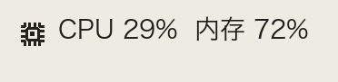
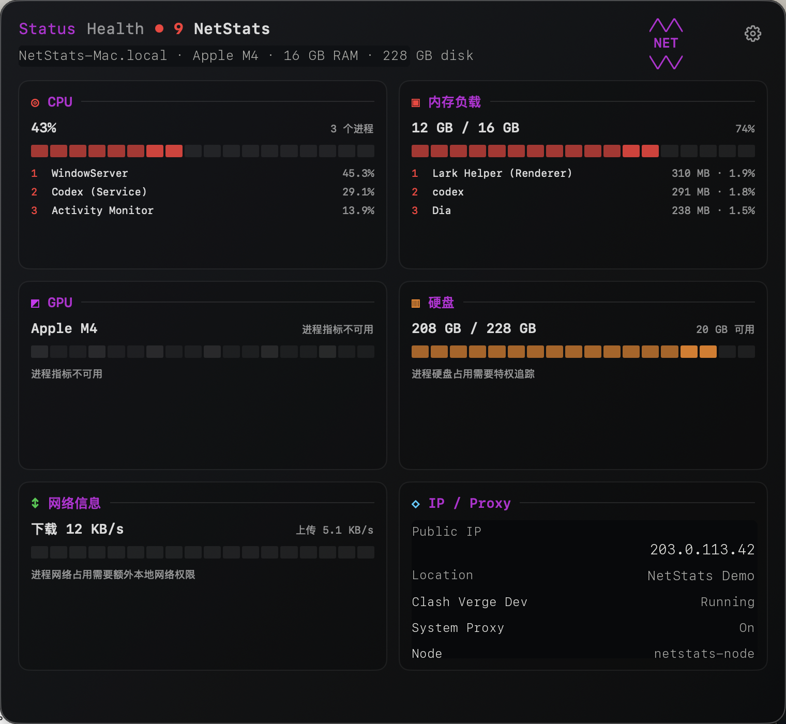

原生 macOS 菜单栏监控
盯住你的 Mac 状态信号。
NetStats 将 CPU、内存、网络速度、公网 IP、地理位置和 Clash Verge Dev 状态放进一个紧凑的原生菜单栏 App。
$ brew tap autumncry/tap
$ brew install --cask netstats
$ brew install --cask netstats


macOS 14+
原生 AppKit + SwiftUI App
Homebrew
通过 autumncry/tap 安装
本地优先
系统指标留在你的 Mac 上
Clash 感知
代理、TUN、模式、节点状态
紧凑菜单栏，需要时展开详情面板。
NetStats 只把你选择的指标放进菜单栏。点击状态项即可打开原生 macOS 面板，查看硬件、内存、网络、IP、位置和代理信息。
为同时关注系统负载和网络状态的人设计。
NetStats 关注日常真正高频的信号，而不是把所有可能的指标塞进菜单栏。
硬件概览
CPU、GPU 标识、内存负载、已用内存、缓存和压缩内存，以分区面板呈现。
网络可见性
上传下载速度、公网 IPv4、地理位置，以及一键复制 IP。
Clash Verge Dev 状态
显示进程状态、系统代理、TUN、模式、订阅、代理组和当前节点。
可配置菜单栏
选择哪些指标常驻菜单栏，其余信息保留在详情视图里。
原生 macOS 质感
使用 Swift、AppKit 和 SwiftUI 构建，让菜单栏 App 融入 macOS。
中文与英文
根据你的工作流在中文和英文界面之间切换。
清晰的隐私边界。
NetStats 以本机系统可见性为核心设计，不做项目方遥测，并明确说明唯一的外部查询。
本地指标
系统指标、网络速度和 Clash Verge Dev 状态均在你的 Mac 本机读取和处理。
没有 NetStats 服务器
应用不会把你的系统状态或代理状态上传到任何 NetStats 项目服务器。
公网 IP 查询说明
公网 IP 与地理位置功能会请求 ipinfo.io，用于解析当前公网出口地址。
通过 Homebrew 或 GitHub Releases 安装。
第一版公开构建未签名。下载后，macOS 可能会要求你在系统设置中允许打开。
Homebrew
通过 NetStats tap 安装公开 GitHub Release DMG。
brew tap autumncry/tap
brew install --cask netstats
从源码构建
克隆仓库，并使用 Swift Package Manager 构建。
git clone https://github.com/autumncry/netstats.git
cd netstats
swift build -c release